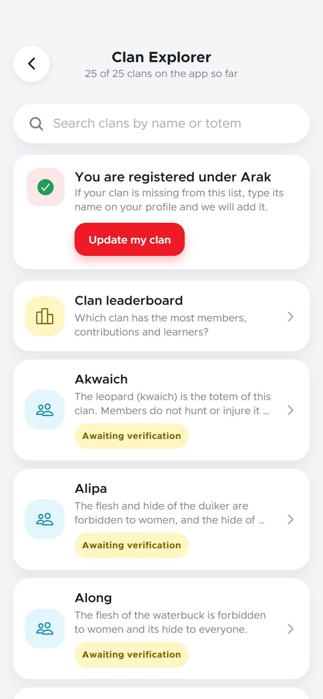
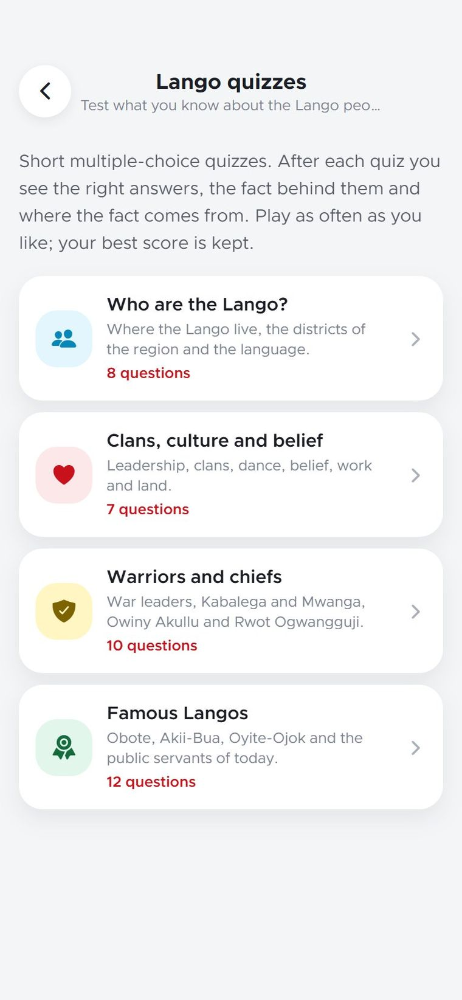
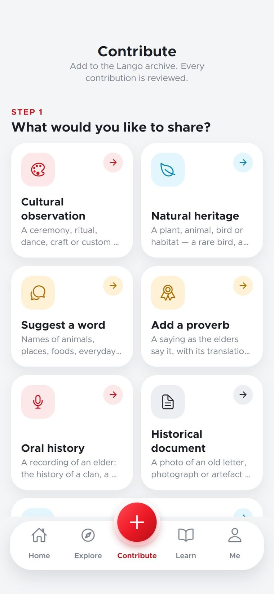
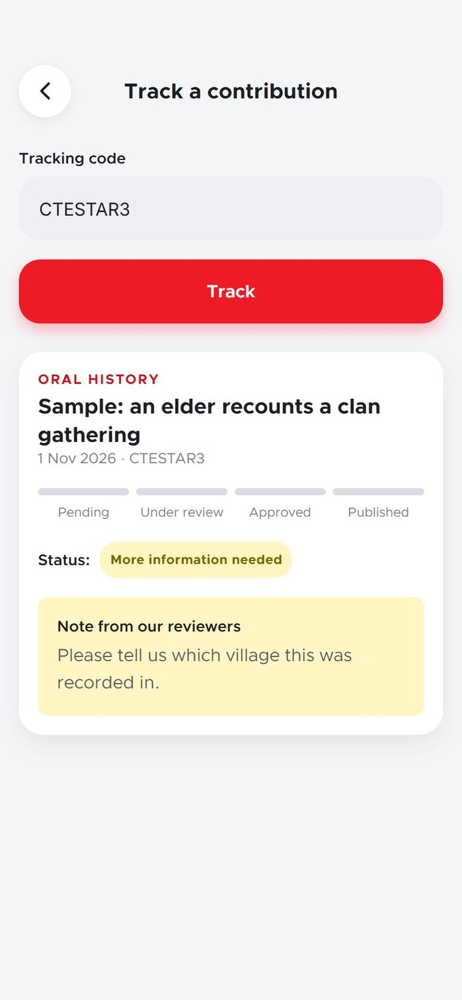
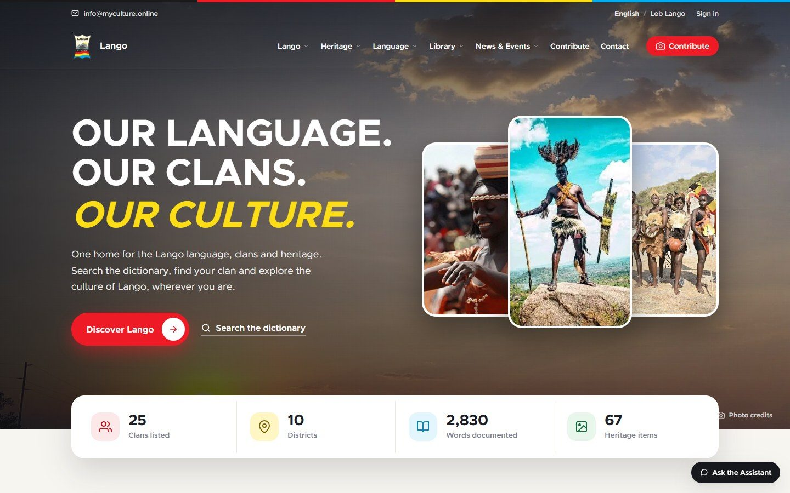

One platform where every community documents, teaches and keeps its own language and heritage, reviewed by its own people and open to the nation. Working today for Lango, built for Acholi, ready for the next community.
Mobile appWebsiteReview systemOpen data APILango as the working model
2,800+words in the dictionary
25clans with their prohibitions
30heritage entries with sources
2communities built: Lango, Acholi
For the Honourable Minister of Gender, Labour and Social Development · Kakebe Technologies Limited, Lira City1 / 7
Why this matters, and why now
Uganda’s cultures live in memory. Now is the time to keep them.
Uganda recognises 65 indigenous communities and has more than 40 indigenous languages. Much of what makes each community distinct, its words, clans, proverbs, songs and histories, is spoken rather than written. When an elder dies, or a family moves to town or abroad, it can be lost. The technology that could help is built mostly for other languages.
65indigenous communities in the Constitution’s Third Schedule56 in 1995; 9 added in 2005
40+indigenous languages spoken in UgandaMinistry statement, Feb 2026
7 m to under 700people per community, from the Baganda to the VonomaCensus 2024, as reported
3 in 4Ugandans are aged 30 or youngerCensus 2024 (UBOS)
43%of people aged 10+ own a phone; 9% used the internetCensus 2024
The risk
Elders carry the knowledge.
The Ministry’s own plan for older persons calls them “guardians of traditions and cultural values” and notes that little of it is documented.
The national record is thin.
Uganda told UNESCO in 2023 that its heritage inventory holds 98 elements and is used only “minimally”, because the budget cannot reach 176 districts and over 16 cultural institutions.
Technology skips most of our languages.
Lango is absent from the main open Ugandan language training datasets. In a 2026 benchmark, a leading AI model scored less than half as well on Nilotic languages as on Bantu ones.
The opening
Mandate
The Ministry leads culture, the 2003 UNESCO Convention (ratified 2009) and the national inventory. The 2006 Culture Policy commits to documentation, a cultural information system and local-language dictionaries.
Momentum
On 4 November 2026 cultural leaders at State House proposed a “Digital Cultural Park”. The Ministry’s service standards promise digitised heritage on a national online portal.
Plans
NDP IV aims to lift culture and creative industries from 3.1% to 5% of GDP by 2029/30, led by the Ministry. Mother-tongue teaching is policy in Primary 1 to 3.
Language
The theme of Mother Language Day 2026 was “Harnessing technology to document and develop Uganda’s indigenous languages”.
The gap between intention and the record
UNESCO’s 2026 AI readiness assessment for Uganda recommends keeping national language datasets for at-risk languages as protected, open national assets. The 2006 Culture Policy already names the lack of culture statistics as the sub-sector’s major challenge. MyCulture is a working answer: built, tested on one community, and ready to be extended with the Ministry, one community at a time.
Sources: Constitution of Uganda, Third Schedule and Constitution (Amendment) Act 2005; Ministry of Gender statement reported by Xinhua, 19 Feb 2026; UBOS Census 2024 as reported (Kampala Post 4 Oct 2024; Monitor 9 Mar 2026; UBOS Youth Day 2025 as reported; UNFPA 28 Jun 2024; Business Focus 22 Oct 2024); Ministry of Gender, National Plan of Action for Older Persons 2012; Uganda’s periodic report to UNESCO on the 2003 Convention, Dec 2023; Sunbird AI SALT-31, 2026; Makerere/Sunbird/Google WAXAL dataset documentation; State House press release 4 Nov 2026; MGLSD Service Delivery Standards 2025/26 to 2029/30; National Planning Authority, NDP IV (2025); Uganda National Culture Policy 2006; UNESCO and Ministry of ICT, Uganda AI Readiness Assessment 2026.
MyCulture · Concept note2 / 7
The innovation
One platform, built once. Filled by each community, in its own language.
MyCulture is a free mobile app, website, review system and open data API. It documents, teaches and shares a community’s culture in one trusted place. Any member can contribute; a reviewer checks each contribution before it is published, and only a reviewer can mark it verified. Every screen below is the real app, working on the Lango model.
9:41
DictionaryOver 2,800 words, searchable in Leb Lango or English and kept on the phone for offline use.

9:41
Clans25 clans with totems and prohibitions, each marked “awaiting verification” until reviewed.
9:41
HeritageAttire, crafts, music and ceremonies, with sources and, where known, photo credits.

9:41
QuizzesEvery answer shows the fact behind it and where it comes from.
Learn
Dictionary, word translator, proverbs, phrasebook, word of the day and quizzes.
Belong
Clans, districts, notable people, history, timeline and heritage sites.
Listen and read
Radio, podcast, events and news screens, with links to the Bible; editors add the content.
Contribute
Add words, photos, stories and clan history, even without internet, and follow each one through review.
Lango is the working model
Live for Lango at myculture.online, with an Android test version. Most content comes from published sources and is awaiting review by Lango experts; the review process is built.
Acholi is already built beside it (districts, chiefdoms, heritage, history). It goes live once Acholi speakers have reviewed it and the dictionary rights are cleared.
A new community is created in the admin panel and kept switched off until it is filled; a person then chooses their community at sign-in.
Words can be compared across communities; results are marked as likely equivalents until experts confirm them.
2,800+dictionary words
25clans listed
10districts and cities
30heritage entries
Figures are from the live platform, November 2026. No clan or heritage entry is yet marked expert-verified; entries stay marked “awaiting verification” until a clan leader or language expert reviews them.
MyCulture · Concept note3 / 7
How it works
Communities write it. Experts review it. Everyone can use it.
Knowledge moves through a simple loop, and at every step the community stays in charge of what is said about it.
ShareA member adds a word, photo, story, proverb or clan history in the app or on the website. It is saved on the phone and sent when there is a connection.
ReviewLanguage experts, clan leaders and moderators check it in the admin system and approve, return or decline it. Nothing is called verified until a reviewer says so.
PublishApproved material appears in the app, the website and the open API, with its credit and its status.
Learn and useLearners, schools, the diaspora, researchers and planners use it. Points, streaks and badges reward contributors.
ImproveWhat people search for and cannot find shows where to collect next.

9:41

9:41
Trust is built in
Community-owned. Content is shared with consent and the community keeps its rights to what it shares.
Expert-verified. A reviewer decides what is published, and “verified” is shown only when a reviewer has marked it so.
Credited. Photographs, sources and contributions carry credit lines, and contributors choose whether their name is shown.
Private and safe. Members sign in, the location data inside photos is removed, and a member can ask to delete their account and data.
myculture.online

The same reviewed data feeds three doors: the app, the website shown here and the open API. The home-page counters also include photographs and documents, not only heritage entries.
Built for real conditions
Phone first, offline
The dictionary is saved on the phone, and contributions are kept until a signal returns.
Local letters
Search finds Leb Lango words with their special letters, even when typed on an ordinary keyboard.
Open by design
A documented API lets schools, researchers and government read published content. Access terms are still to be added.
Sacred knowledge
Contributors are asked not to submit sacred or restricted knowledge, and moderators may withhold it.
MyCulture · Concept note4 / 7
Gender, youth and elders
Culture is carried by women, youth and elders. The platform is built around them.
The Ministry’s mandate joins gender, community development, youth and older persons. These are the people who hold and pass on Uganda’s cultures, and who most need to be heard in its record. MyCulture is designed to include them. Where it does not yet, this page says so, marked built today or proposed.
Women
UNESCO notes that women are prominent bearers of intangible heritage, such as foodways learned from mother to daughter, yet calls “the invisibility of women’s contribution” a major issue and asks that inventories be gender-representative.
Phone ownership is 64% for women and 80% for men (FinScope 2023); internet use is 8% for women and 11% for men (Census 2024).
built Oral histories recorded as audio; contributions saved offline until a signal returns; any member can contribute.
proposed Assisted contribution through women’s groups and district community development officers; women on every editorial board; a yearly report to the Ministry on the share of women contributors.
Youth
About three in four Ugandans are 30 or younger. The National Youth Action Plan (2016) lists “Youth, culture and gender” as a priority area, and aims to promote youth cultural expression.
The Ministry implements the National Youth Policy, so young people’s culture and ICT use already sit within its remit.
built Word of the day, weekly challenge, quizzes with sources, points, streaks and badges; contributing from a phone.
proposed Schools and youth clubs as contributors; paid district “culture champions” who record, photograph and help with review.
Elders
The Ministry’s plan for older persons calls them a “depository of customs, traditions, skills and wisdom”, says there is limited documentation, and commits to capture their knowledge.
It also notes that most traditional healers and birth attendants are older persons.
built An oral-history form with audio recording; moderators and clan leaders review before anything is published.
proposed Recording days with cultural institutions, using the consent steps in the Ministry’s 2014 inventory guide, and elders’ own choice of what stays private.
Culture as a force for positive change
The Ministry works with cultural institutions on child marriage, teenage pregnancy and harmful practices. In December 2024 cultural leaders from several institutions committed to “identify, publicize and raise awareness of positive cultural resources”. In April 2026 Sabiny elders were building an alternative initiation curriculum that keeps girls’ mentoring and ends cutting.
A cultural platform can carry such resources and the Ministry’s messages, agreed with cultural institutions, never imposed by the platform.
Safeguards we would keep
Consent first. UNESCO’s ethical principles ask for free, prior and informed consent. The Ministry’s own guide asks for it at four levels: cultural leaders, district leaders, knowledge bearers and each person interviewed.
Documentation can expose. Writing a practice down can “freeze” it or end its privacy, so communities decide what is public and what is not.
Measure who takes part. The share of women, young people and elders among contributors and reviewers is reported, not assumed.
Sources: UNESCO, Intangible Cultural Heritage and Gender, 2015; EPRC policy brief on FinScope 2023, Feb 2026; UBOS Census 2024 as reported (Business Focus, 22 Oct 2024); UBOS Youth Day 2025 as reported and UNFPA preliminary census results, 28 Jun 2024; National Youth Action Plan 2016 (government monitoring report, 2022); Ministry of Gender, National Plan of Action for Older Persons, 2012; Uganda Standard, 9 Dec 2024; Daily Monitor, 1 Apr 2026; Ministry of Gender, National Strategy on Inventorying Intangible Cultural Heritage, 2014; UNESCO Ethical Principles for Safeguarding ICH, 2015; Chiweshe and Mutopo, 2019.
MyCulture · Concept note5 / 7
The value to Uganda
One reviewed record of the nation’s cultures, put to work six ways.
Every reviewed word, clan, story and recording stays with its community and also joins a national register. The register is worth more than the sum of its parts, because each use below draws on the same record.
Communitiesshare what they know, with consent
Reviewtheir own experts check and credit it
National registerone open, sourced, community-owned record
Six usesbelow, each from the same record
Keeps cultures alive
Uganda’s national heritage inventory holds 98 elements and is used only “minimally”. MyCulture gives each community a living record it can review and keep adding to.
Teaches children in their own language
Mother-tongue teaching has been policy in Primary 1 to 3 since 2007, and NCDC’s 2025 study recommends 26 languages, including Leb Lango and Acholi. Dictionary, proverbs and sourced quizzes are ready lesson material.
Builds jobs and creative industries
NDP IV aims to lift culture and creative industries from 3.1% to 5% of GDP by 2029/30; the sector gave 386,000 jobs in 2021/22. Findable heritage, sites and events, and paid local editors and recorders, feed that goal.
Gives planners evidence
The 2006 Culture Policy names missing culture statistics as the sub-sector’s major challenge, and the National Planning Authority’s 2025 study asks for stronger data systems. A dated, sourced register with an open API answers both.
Puts Ugandan languages into AI
UNESCO’s 2026 assessment recommends national language datasets as protected national assets. Reviewed, consented data stays community-governed and lets Ugandans build tools in their own languages.
Unites without flattening
Vision 2040 commits Uganda to unity in diversity. Every community is shown on equal terms, in its own words, and the diaspora has a way home.
Proof that it scales
FirstVoices, British Columbia
Launched in 2003 with 15 language sites, FirstVoices had grown to more than 80 language sites by 2024. One platform serves dozens of First Nations; each keeps full ownership and control of its content and can keep sacred material behind a login. It is hosted by a public body, the First Peoples’ Cultural Council, and free to the communities.
What Uganda can borrow: a public host, community ownership, private areas for sensitive knowledge, and grants that reach communities as well as the platform.
Why the Ministry is the right home
It leads culture, and under the 2023 Museums and Monuments Act the Ministry responsible for culture administers intangible heritage.
It already runs the national inventory and a culture and creative sector register, which MyCulture complements: a content record, not a list of practitioners.
District community development offices carry out Ministry policy and already run its programmes for women, youth and older persons.
Sources: Uganda’s periodic report to UNESCO on the 2003 Convention, Dec 2023; Thematic Curriculum Policy (UNESCO report) and The Observer, 24 Sep 2025 on NCDC; National Planning Authority, NDP IV, 2025 and Diagnostic Study of Cultural and Creative Industries, 2025; Uganda National Culture Policy 2006; UNESCO and Ministry of ICT, AI Readiness Assessment for Uganda, 2026; Uganda Vision 2040; First Peoples’ Cultural Council release, 21 Feb 2024; Museums and Monuments Act 2023; MGLSD website; Bugiri District Local Government.
MyCulture · Concept note6 / 7
From one community to the nation
A repeatable model: add one community at a time, until Uganda is covered.
Lango proves the method. The platform is built once, so what changes from one community to the next is its content and the people who review it. The admin adds a community without new software; Acholi is the first test.
Layer 3 · the national hub (next)
One national picture
Search across communities, a national dictionary and heritage atlas, an open data portal and language services.
Layer 2 · each community
Its own content and editors
Dictionary, clans or chiefdoms, districts, heritage, people, history and quizzes, written and reviewed by that community.
Layer 1 · built once
The shared platform
Mobile app, website, admin and review system, open API, offline use and sign-in.
How a community joins the same six steps, each time
1
Invite
The community’s cultural institution or leaders agree to take part.
2
Create
The community is set up in the admin and kept switched off while it is filled.
3
Appoint
Editors are named: language experts, clan leaders, women and youth.
4
Seed
Starter content is collected and reviewed, with sources and credits.
5
Switch on
The community goes live in the app, the website and the API.
6
Grow
Members contribute, editors review, and gaps guide what to collect next.
Still to build for national scale:per-community editor rolesMinistry reporting viewAPI access termsexpert review of entriessentence translationLeb Lango wordingscheduled backupsPlay Store release
The road ahead in phases, each ending in a decision
NowProofLango live, Acholi built, admin and open API ready.
First 12 monthsPilot with the MinistryLaunch Lango and Acholi, add three communities from different regions, run a schools pilot. First 90 days: endorsement, working group, pilot agreement.
Years 2 to 3National rolloutRemaining communities in waves, each led by its own editors.
AfterNational hubOne national dictionary and atlas, cross-community search, open data portal.
Who steers it
National steering committee, chaired by the Ministry, with cultural institutions, education, ICT and universities.
Community editorial boards decide what is verified and what stays private.
Rights stay with communities; the Ministry holds the national register.
What we ask of the Ministry
Endorse MyCulture as a national cultural platform.
Convene a technical working group to guide the pilot and align it with national culture and digital policy.
Open doors to cultural institutions and district community development officers.